RTR: Imperium Surrectum
RTR: Imperium SurrectumEgypt
2023-05-17 · Tarnholm
Welcome to a brand-spanking DD. Today we're going to show you yet another exciting faction that we are adding to the mod in 0.6, Egypt.
In 270 BC, Egypt was ruled by the Ptolemaic dynasty, which had been founded by one of Alexander the Great's generals, Ptolemy I Soter, after Alexander's death in 323 BC. The Ptolemaic dynasty had maintained control over Egypt for over two centuries, but they faced many challenges in governing the country, particularly as a foreign ruling elite.
Egypt was an important centre of trade and commerce, with a thriving economy based on agriculture, manufacturing, and international trade. The Nile River was the lifeblood of Egypt, providing water for irrigation, transportation, and fishing. The country was also known for its rich mineral resources, including gold, copper, and iron.
The Egyptian people had a long and proud history, with a rich cultural heritage that included art, literature, religion, and science. They had their own language, hieroglyphics, which was still in use in some contexts alongside the Greek language introduced by the Ptolemies, and Demotic, the language preferred by most common Egyptians. The Egyptian religion was also still practised, although it had evolved over time and had been influenced by Greek and other foreign cultures.
During the Ptolemaic period, Alexandria had become one of the most important cities in the Mediterranean world, a centre of learning and culture that attracted scholars, philosophers, and artists from all over the ancient world. The Library of Alexandria, founded by Ptolemy I, was one of the most famous institutions of its kind, with a vast collection of books, manuscripts, and other scholarly works. It was part of a greater complex for research and education, the Museion, which, though comparable with a modern-day university, has lent its name to the term museum."
Despite these achievements, Egypt remained a politically unstable and socially divided country, with a large population of native Egyptians who resented the foreign rule of the Ptolemies. The Ptolemies relied heavily on their Greek and Macedonian soldiers and administrators to maintain their control over the country, which led to tensions and conflicts between the Greeks and Egyptians. The addition of the Egyptian faction to the mod in version 0.6 will provide an opportunity to explore these dynamics and conflicts in more detail.
The Egyptian faction will depict the native population who frequently rebelled against their Greek rulers, with the most significant uprising being the Great Revolt (205-186 BC). During this period, Upper Egypt was lost to the Ptolemaic kings after a gruelling guerrilla war. Pharaohs Hyrgonaphor (Haronnophris) and his successor Chaonnophris aimed to establish a new native dynasty that would end foreign rule, which had persisted since the arrival of the Persians under Kambyses in the late 6th century BC. Despite their efforts, the Egyptians were eventually defeated, and remarkably, it wasn't until 1954 and the controversial Gamal Abdel Nasser that a native Egyptian became the ruler of the country again.
Moving on, let's discuss the units that you will encounter if a rebellion occurs. The units the Egyptian faction is using are based on various sources, ranging from Papyri who described the Machimoi, the largely Egyptian units who fought under the Ptolemies, to pre-Ptolemaic depictions of skirmishers and archers with the typical Nubio-Egyptian padded linen vests, to Xenophon, who discussed the armies of rebelling Egyptians and Egyptian mercenaries in the 4th century BC. The emblematic unit of the Egyptians, mentioned in almost all of these sources, is the so-called Longspearmen, who bore very long spears and huge shields - probably the largest shields we have in RIS. Some do not wear any body armour or headgear at all, however, because they relied on those shields to protect them against everything. They will have the ability to form a schiltron formation, which Xenophon talks about in some detail. Together with the Machimoi pikemen, who also have an elite regiment, the Epilektoi, this gives the Egyptians a strong set of melee infantry that can hold their ground. The reform swordsmen perfectly add to these as an attacking option and the famous archers are some of the deadliest in the mod, but Machimoi cavalry is light and therefore a weak spot.
Egyptian Skirmishers:
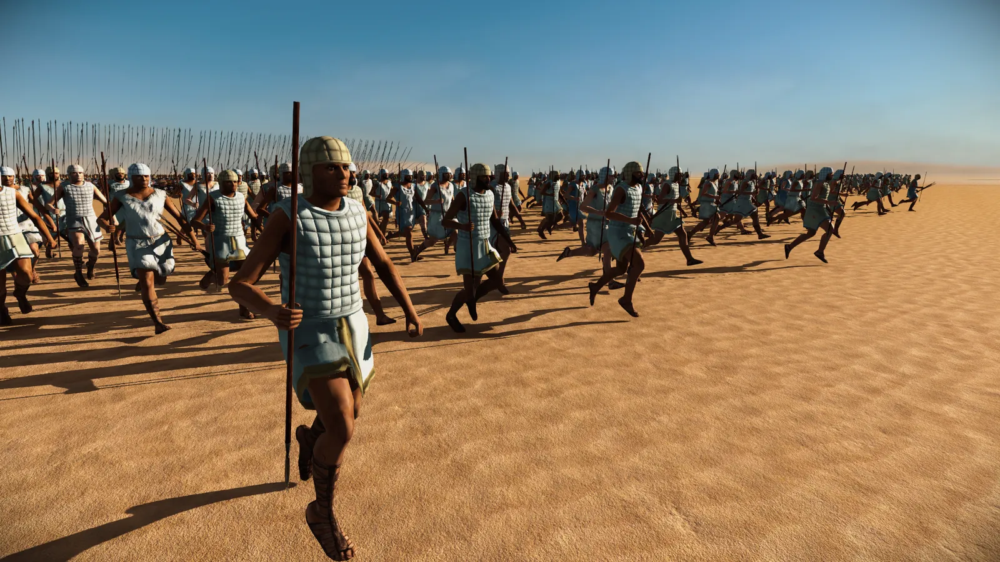
Egyptian Slingers:
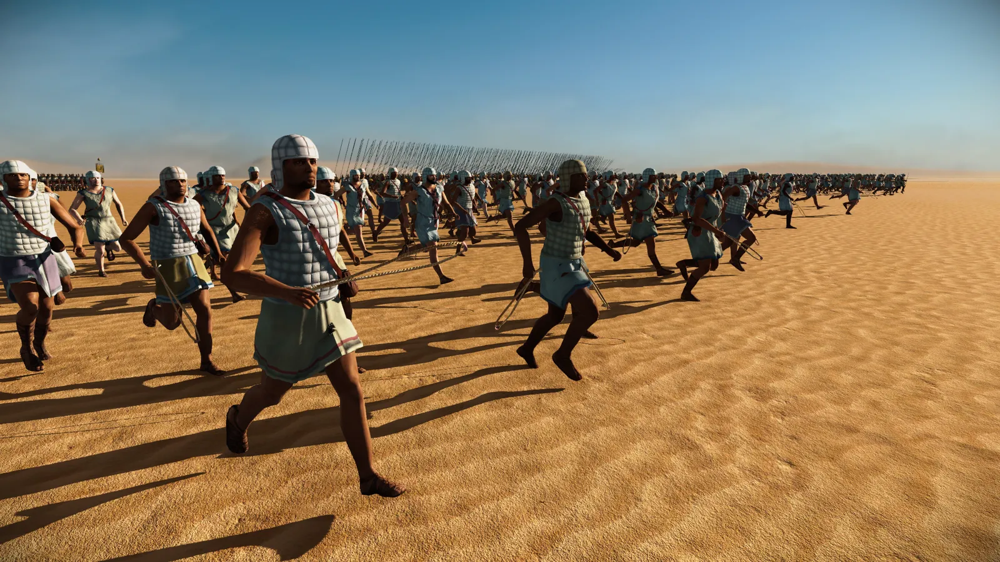
Machimoi Archers:
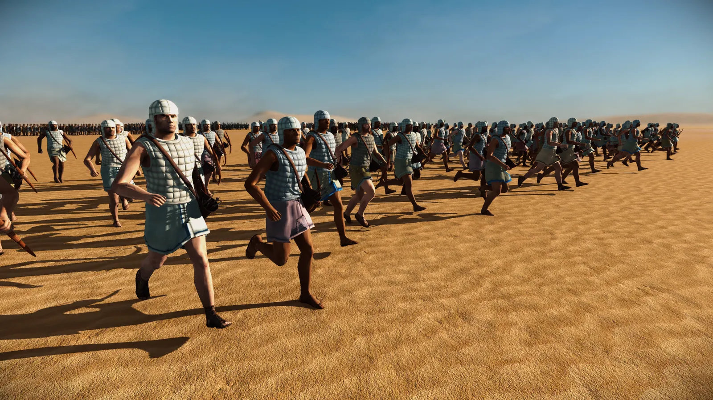
Egyptian Longspearmen:
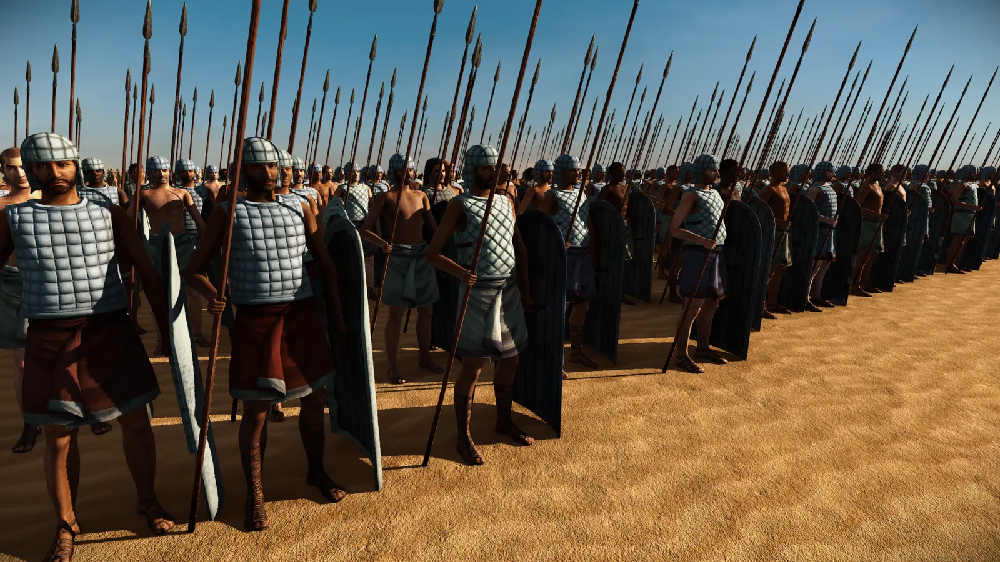
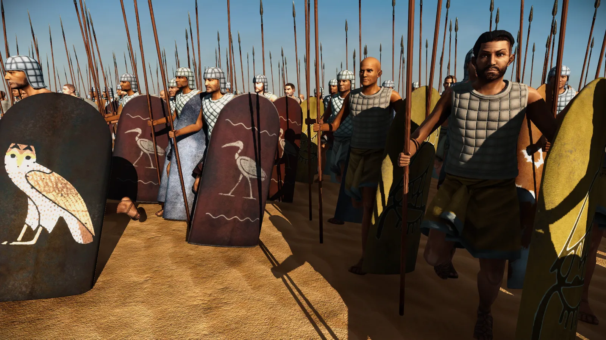
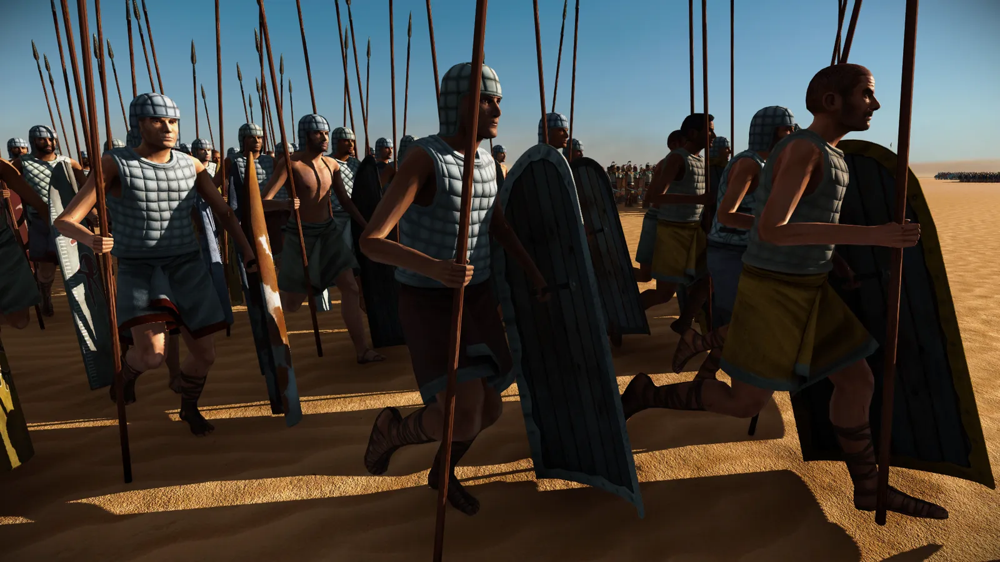
Machairophoroi:
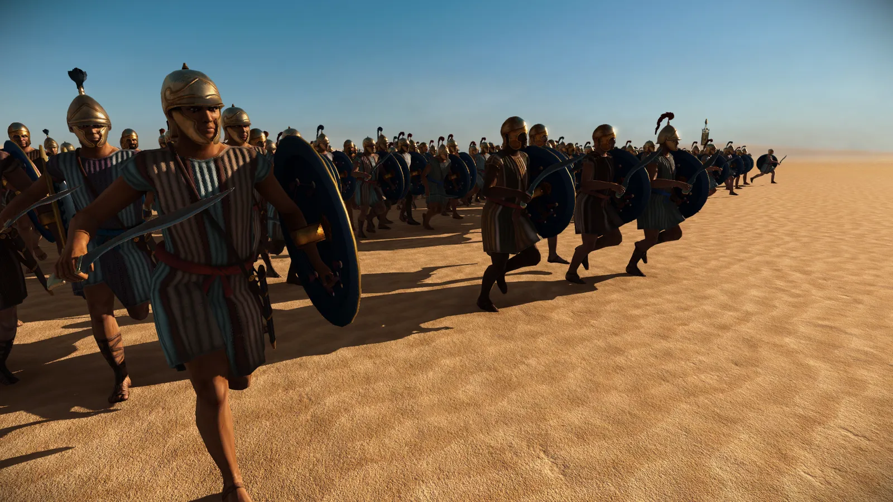
Machimoi Swordsmen:
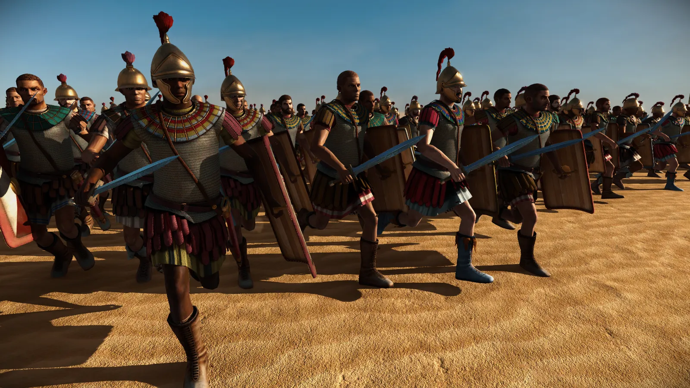
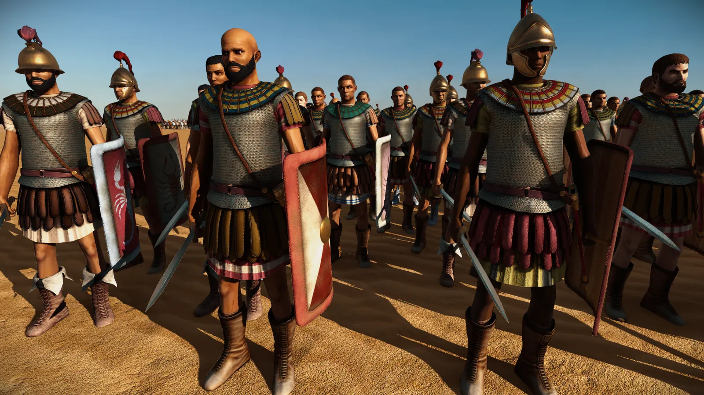
Machimoi Phalangites:
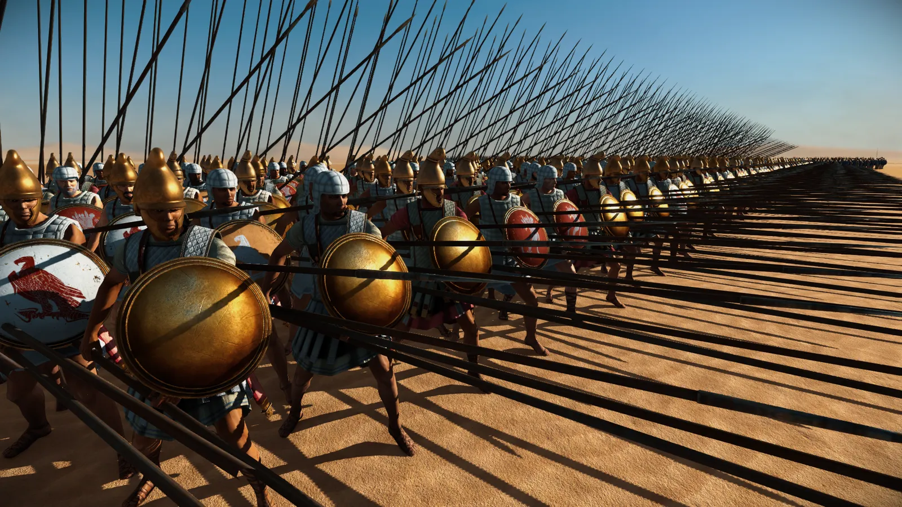
Libyan Phalangites:
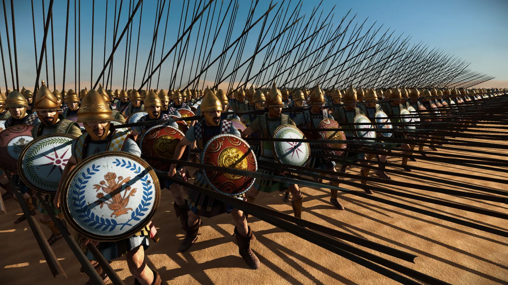
Machimoi Epilektoi:
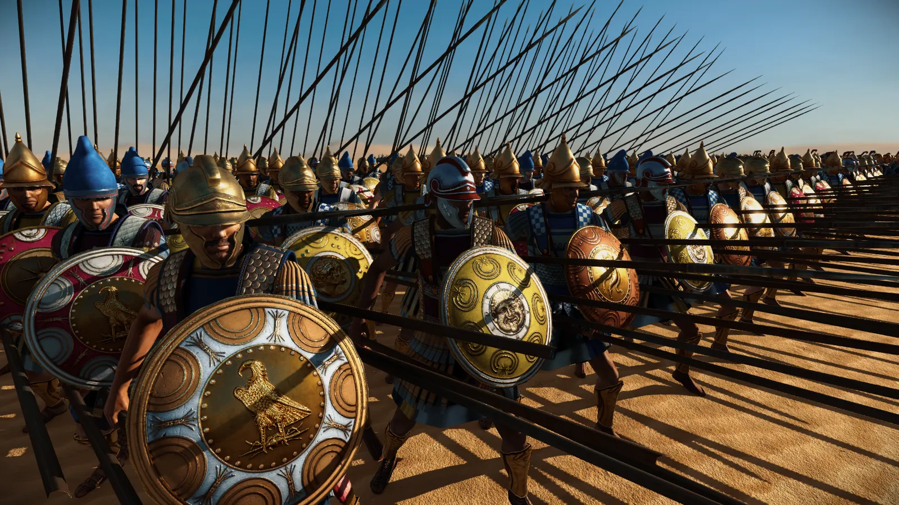
Machimoi Cavalry:
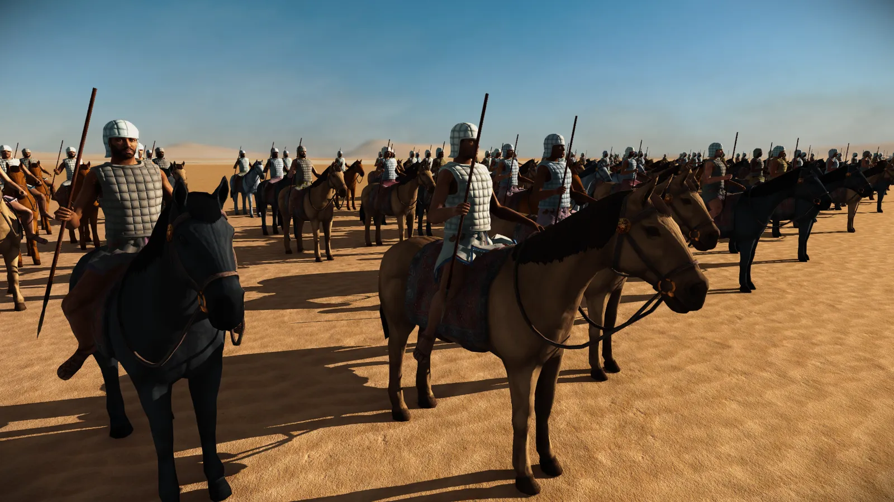
Machairophoroi Cavalry:
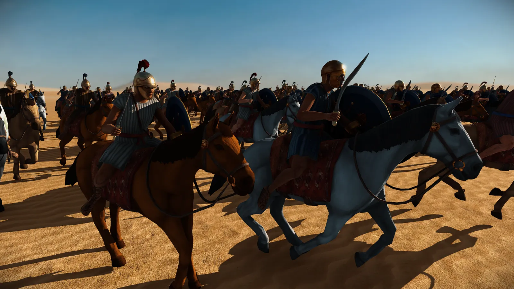
Kasai Cataphracts:
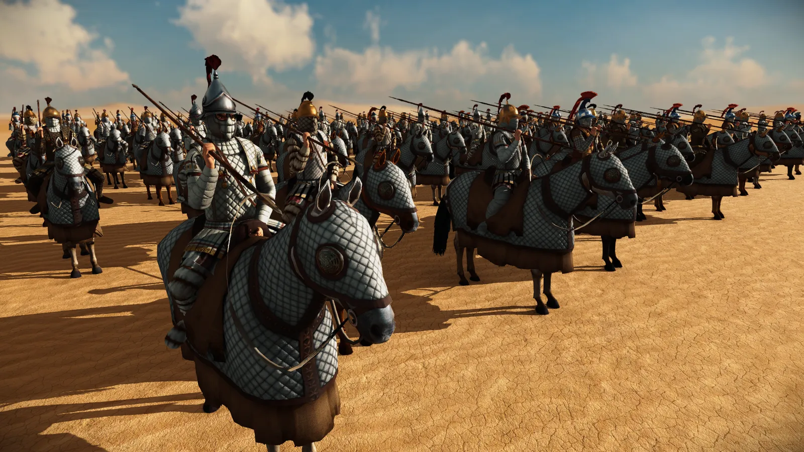
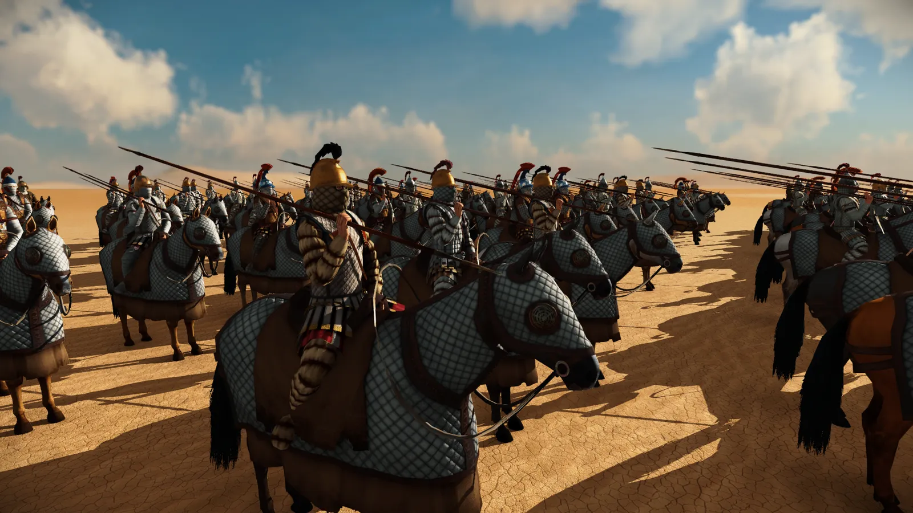
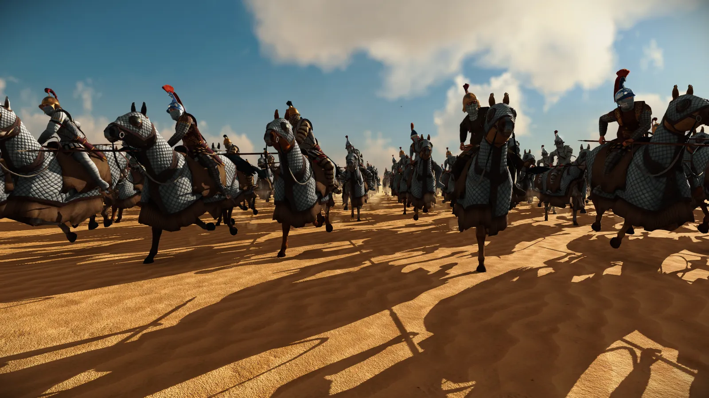
Machimoi Reforms:
The establishment of the machimoi as a military unit was a slow process, resulting from the increased need for reserve soldiers, guardsmen, and garrisons in the Ptolemaic armed forces (Burckhardt, ‘‘Machimoi’’, in: Brill’s New Pauly (2006)). The army, mainly made up of Greeks or foreign mercenaries, was constantly at war, both internally against revolts, and externally against the Seleucid Empire. The Ptolemies were never shy about buffing up their ranks with native Egyptians, either as light troops at the Battle of Gaza in 312 BC (Diod. XIX.80) or as auxiliaries in Greece during the Chremonidean War in 266 BC (Paus. 3.6.5), however, they showed true desperation at the decisive Battle of Raphia in 217 BC, where 20.000 Egyptians did not just serve as supply guards or light infantry, but were made part of the main battle line, the phalanx.
This incorporation into the Ptolemaic army opened up a lot of career opportunities for the native Egyptians. The term “machimoi” (μάχιμοι, ‘the pugnacious’, or ‘troops fit for action’) might have initially just referred to “warriors” of ancient Egypt when it was used by Herodotus (VII, 186, 1). In the Ptolemaic era, the title could have simply described soldiers and reservists with certain types of small land allotments. Thus, some scholars, like Christelle Fischer-Bovet, disagree with the notion that machimoi were only Egyptians or 2nd-class citizens, but rather professional soldiers with their own plots of land, who were called to the front as reserves if need arose (Christelle Fischer-Bovet: Egyptian Warriors: Herodotus and the Ptolemaic army (2013) p. 219-220). The fact that Greek names appear among machimoi ranks on Ptolemaic documents, and neither Diodorus nor any other ancient author refers to Egyptian soldiers as machimoi, also throws into question, if they were just made up of Egyptians, but they at least seemed to have made up the majority of machimoi. Their rise to importance, like for the Egyptians, came in the 2nd century BC, where they are increasingly referred to in the documents (Burstein (2008), p. 74). Under Ptolemy V, they usually got allotted kleroi of 5 arouras, but a picked force of them (the machimoi epilektoi), who were even employed as guards for the royal Ptolemaic court or as garrison troops in Alexandria, received 7 to 10 arouras of kleroi, enough to sustain themselves and their families, even for a short time of absence to go on campaign or be on duty (Fischer-Bovet & Sänger, Security and Border Policy (2019), p. 169). Issues arose when a campaigning season went on for too long, as they had to return home to help their families tend to the fields. In 164 BC, a laarchia of epilektoi machimoi complained via petition to the dioketes that their families could not undertake increased cultivation demanded from them by a new royal decree, while they were stationed in Alexandria (Fischer-Bovet (2014), p. 152). It’s in these important positions, as well as through the strengthening of police and paramilitary forces due to internal strife in the 2nd century BC, where the machimoi got increased political and economic leverage to improve their status. Over time, the Ptolemaic kings were well advised to keep the machimoi loyal by confirming their holdings and status, especially the epilektoi of their court.
Kasai Cataphracts:
These heavy Ptolemaic horsemen are clad in kasai, Aithiopian-style robes that conceal the whole body of both rider and horse but for the eyes. They protect the soldiers and their mounts against the heat and sand of the desert, but can also deflect arrows and even javelins or stabbing spears. In melee, the Kasai cavalry can defend themselves with Kopis swords, but they usually charge the enemy with their lowered lances, the Macedonian Xyston. Pilos, Konos, Sidon, Phrygian and Boiotian helmets as well as coif cloaks complete their equipment, making them a powerful and dangerous unit that can easily break an enemy line – in the desert, or in more hospitable lands!
HISTORICAL BACKGROUND:
The Ptolemaic secretary and historian Agatharchides of Knidos (ca. 208 - after 132/131 BC) described the campaign of Ptolemy II against the Nubian kingdom of Kush just before 270 BC in a detailed report. The pharaoh had prepared the enterprise in detail and strengthened his army with freshly recruited mercenaries. Since most of them hailed from Greece, however, they struggled with the intensive heat in the Nubian desert (for all people from Northern and Central Europe: yes, Greece is hot as well, but they DO actually have winter. The Nubian desert does not. It is hot. ALWAYS. And yes, it is still called Nubian desert, and yes, the people are still called Nubians, too. But enough with this Herodotean digression). According to Agatharchides, Ptolemy found a rather odd solution: "For the war against the Aithiopians Ptolemy recruited 500 cavalrymen from Greece. To those who were to fight in the front ranks and to be in the vanguard – they were a hundred in number – he assigned the following form of equipment. For he distributed to them and their horses quilted robes, which the natives of that country call 'Kasai', that conceal the whole body except for the eyes." – Agatharchides of Knidos, On the Erythraian Sea (F20 Burstein).
This strange appearance has attracted the attention of several military historians in recent years. Paul Johstono (Ptolemaic Army (2020), p. 117) of the US Airforce University writes that these kasai were "[...] probably a type of quilted garment; thick layers of wool were pressed together and sewn. The kasai are known even from early modern times". The South African author Jean Charles du Plessis adds that they were basically cataphracts, just with quilted robes, ‘stolas piletas’ in the Greek original: "These robes were obviously trappers of thick felt used as armour which covered the entire horse 'except for the eyes'." (Seleucid Army (2022), p. 84). They may also be depicted on stelae and thus the armament could have been used on other occasions, too (cf. Thion, Le Soldat Lagide (2015), p. 9; with a reconstruction image). For this reason, they are available to every power in the region. The felt cataphracts are well armoured against both heat and enemy fire, and an assemblage of popular Hellenistic helmets affords their heads extra protection. Though no report of their deployment in battle survives, Ptolemy II’s campaign was a success and it is easy to imagine that the felt cataphracts played a starring role in this. As powerful shock and melee cavalry, they are a unique sight on the battlefield and especially useful down here in the Nubian desert.
Machimoi Swordsmen:
HISTORICAL BACKGROUND
Egyptian warriors had been recruited by the Ptolemaic pharaos since the beginning. They fought at the Battle of Gaza in 312 BC (Diod. XIX.80), in Greece during the Chremonidean War in 266 BC (Paus. 3.6.5), and as a phalanx of 20.000 men at the Battle of Raphia in 217 BC (Polyb. V.65.9). Most of them were known as machimoi (μάχιμοι, ‘the pugnacious’, or ‘troops fit for action’). During the Ptolemaic era, machimoi may have been native Egyptians, employed as reserves, guards and police units (Burckhardt, s.v. ‘‘Machimoi’’, in: Brill’s New Pauly (2006)). However, their true nature remains an element of debate in the academic literature.
Machimoi received allottments of 5, 7, or 10 arouras for their service in the military or police. In the 2nd century BC Egyptians and Greco-Egyptians became more prominent among the active forces and were better integrated into the cleruchic army. It is in this period where the difference of plot sizes between the machimoi and the cleruchs decreased and the social boundaries were loosened (Fischer-Bovet, Army and Society in Ptolemaic Egypt (2014), p. 121-122; 162). As with all other troops in the Ptolemaic army, the equipment of the machimoi would have been state-funded (Polyb. V.63.11).
A terracotta figurine with religious function dated to the late 2nd century BC or 1st century BC and found in the Fayoum (probably) shows Harpokrates, the son of Horus and Osiris, armed as a soldier. The equipment reflects contemporary usage (Sekunda, Nicholas, The Ptolemaic Army 1998, fig. 95). It includes mail armour that was introduced to the Hellenic world through contact with Celtic invaders and subsequently Celtic mercenaries in the 3rd century BC. These Galatians had also served in the Ptolemaic army at Raphia in 217 BC, and some of them had already been settled in Egypt by this time - largely in the Fayoum (Polyb. V.65.10). Not all of them wore chainmail, but its impressive qualities may have convinced others who served in the Ptolemaic army to adopt the armour themselves: One of the soldiers in the Sidon garrison of the early 2nd century BC is also depicted with chainmail (Van Wees, Review of: Sekunda, Ptolemaic Army 1998) and in the course of the Great Revolt of the Egyptians (205-186 BC), the Ptolemies introduced Thorakitai to counter the guerillas of Lower Egypt (attested, for instance, in the papyrus P. Mich. inv. 6947). Flavius Josephus probably referred to these soldiers when he described "hundred fighters" (hekatontamachoi, i.e., fighting in formations of a hundred men, not in a phalanx) with Thureos shields in both the Ptolemaic and the Hasmonean army at the Battle of Asophon in 103-101 BC (Ios. ant. Iud. 13.339).
In the light of such developments, it is no surprise to see Egyptians adopting chainmail and sword as their primary equipment. Covering the shoulders and upper part of the chest of the figurine is a wesekh, or wide collar, which was worn in Egypt since the old kingdom and used until the Graeco-Roman period. Sekunda’s and McBride’s reconstruction of a warrior based on this figurine, who could have possibly worn this kind of equipment, is helmetless, though at least some bronze helmets could have possibly been worn (Sekunda,1998, fig. 96).
The machimoi swordsmen are a heavily armoured infantry unit, acting as a mobile shock unit that can easily outflank enemy forces.
As you can see, our team strives for excellence in accuracy and details as can be seen both in the units' visual representation and the thoroughly researched descriptions our historians create. We hope you all will enjoy seeing a well-represented Egypt once 0.6 launches later this year. And with that, we bid you farewell for this time, with a promise of more to come. 🙂
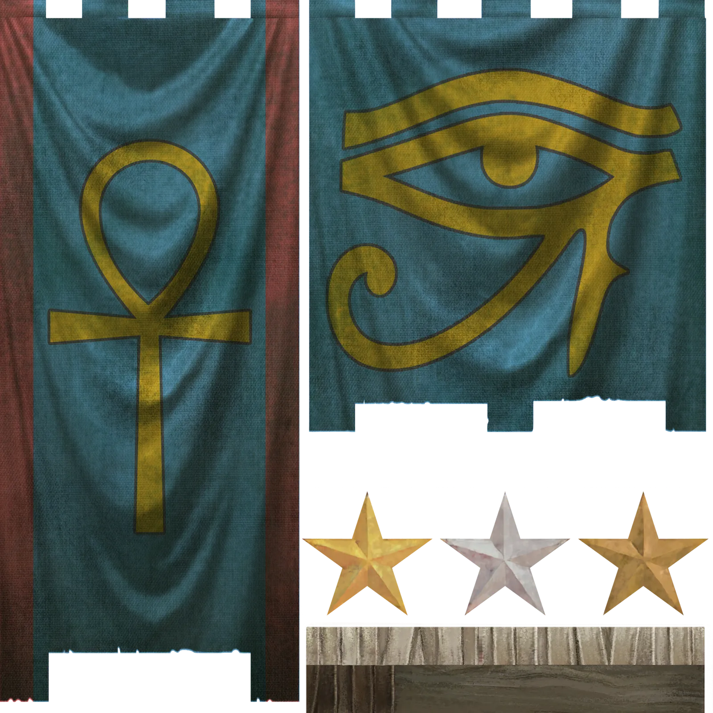